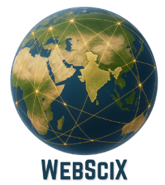

WebSciX 2026
20 Years of Web Science: Navigating the Era of Generative and Agentic AI
WebSciX India
WebSciX India is a proposed satellite event of the ACM Web Science Conference, dedicated to advancing the interdisciplinary study of the Internet, World Wide Web (WWW), and Artificial Intelligence (AI) and their impact on human lives in India and surrounding regions. WebSciX builds upon the Web Science for Development (WS4D) series of events conducted in India since 2019.
With over 800 million Internet users as of 2025, India’s digital landscape is shaped by its 1.4 billion population, diverse cultures, and rapid technological adoption. India has also made significant strides in digital identity, payments, technology-enhanced education, and web-enabled public and private services. However, challenges such as digital divides, misinformation, and privacy concerns persist, demanding a localized Web Science approach.
Scope and Focus
In this context, WebSciX India aims to:
- Address region-specific issues such as multilingual content, rural connectivity, and digital literacy
- Examine the impact of AI and the Web on key sectors like commerce, education, and public services
- Propose inclusive and scalable interventions for equitable digital access
Objectives
- Community Building: Establish a regional network of interdisciplinary experts including researchers, technologists, social scientists, and policymakers
- Localized Research: Promote research addressing India-specific issues such as Digital Public Infrastructure (DPI), digital inclusion, misinformation, data privacy, and socio-economic implications of AI
- Innovative Solutions: Develop technologies, policies, and frameworks to tackle challenges and leverage opportunities in India’s digital ecosystem
- Global-Local Integration: Connect global Web Science research with India’s priorities for impactful and relevant outcomes
Target Audience
- Academics and Researchers: Computer science, sociology, economics, anthropology, and policy studies
- Technologists and Industry Experts: AI, web platforms, mobile systems, and digital infrastructure
- Policymakers and Regulators: Digital governance and public policy stakeholders
- Civil Society and NGOs: Focused on digital inclusion, privacy, and societal well-being
- Students and Early Researchers: Interested in interdisciplinary Web Science
Expected Outcomes
- Research Collaboration: Formation of interdisciplinary research groups addressing India’s digital challenges
- Knowledge Repository: Publication of proceedings including research papers and policy briefs
- Community Network: Establishment of a WebSciX India community (forums, platforms, etc.)
- Actionable Interventions: Proposals for technologies and policies addressing inclusion, misinformation, and ethical AI
- Global Contribution: Strengthened representation of India in the global ACM Web Science ecosystem
Call to Action
WebSciX India invites researchers, technologists, policymakers, and civil society to join this initiative to shape the future of Web Science in India. By fostering interdisciplinary collaboration and contextual research, WebSciX India aims to ensure that the Internet and AI empower and uplift communities across India and beyond.